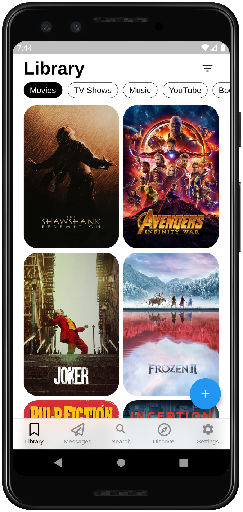

Let your friends put recommendations directly into your list. Without any effort, it will be full of things that your friends have picked especially for you.

Keep track of and recommend anything you enjoy:
Movies – TV Shows – Music – YouTube Videos – Books –
Podcasts – Links